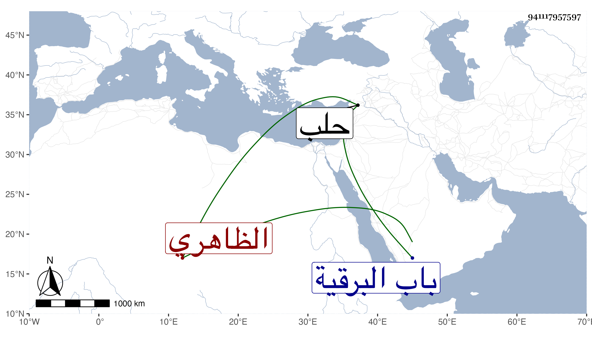

0902Sakhawi.DawLamic.ITO20230111-ara1.EIS1600.941117957597
Biography ID: 941117957597
1067
سودون الطيار الظاهري برقوق . من أعيان خاصكيته وممن صار في أيام ابنه الناصر فرج أميراخور ثاني ثم أعطاه الاخورية الكبرى ولم يلبث أن عينه للبلاد الشامية للكشف عما طرق من الأخبار الرومية وطالت غيبته فقرر في الاخورية غيره ثم أعطى بعد مدة إمرة بحلب مع حجوبيتها فامتنع فبعد مدة استقر أمير مجلس ثم أمير سلاح إلى أن مات في شوال سنة عشر وحضر السلطان جنازته ودفن بتربة صهره أقبغا الدوادار خارج باب البرقية ، وخلف موجودا كثيرا وأوصى بثلث ماله وعين جماعة منهم العيني فاستولى الناصر على التركة بواسطة جمال الدين الاستادار ولم ينفذ الوصية ، وكان عفيفا شجاعا مقداما دينا محبا للعلماء والصالحين موقرا لهم مشكور السيرة ، قال العيني كان متورعا عن الحرام صاحب أدب محبا في العلم والعلماء مشهورا بالفروسية ولعب الرمح ورمى النشاب وتمرين الخيل الصعاب ، وإليه ينتسب اسنبغا الطياري رأس نوبة النوب لكونه كان خدمه بعد موت أستاذه .
